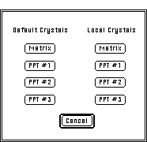

Desktop
Manual
Desktop
Manual
Load And Dump Tutorial
The manner in which information is transferred between objects in Desktop
Microscopist is by changing the parameters of the Default Settings. The
Default Settings contain all the information that can be designated when
the application has no windows. Defaults can be set for the four crystals,
their orientation relationships, the settings for plotting (the plotting
parameters are found under the Edit Menu - Set Plot Parameters), crystal
shape, crystal elastic constants and parameters of the electron and x-ray
beams. When a new window is opened, the default parameters are automatically
inserted into the current fields. By utilizing the concept of default parameters,
it gives each window independence from other windows thereby allowing the
comparison of crystals with different structures. Alternatively, crystallographic
information may be transferred from one object window to another by utilizing
the default crystals as a clip board. This is achieved by transferring the
desired source crystal into a default crystal and then opening the destination
crystal and retrieving the appropriate default value.
103.
Figure 5
Desktop Microscopist allows three different methods for setting Default
Parameters and three similar methods for accessing default parameters. One
example of the first method for setting Default parameters has already been
completed. When there are no table or graphing windows active, any parameters
which are changed effect the Default settings. The second method occurs
when the Dump option is accessed. This option is available inside all dialog
boxes which are accessed under the Parameter Menu.
When in an object, if the Matrix Crystal Parameters are changed, clicking
on the Dump button brings up the Load / Dump Dialog. Selecting one of the
options displayed therein will cause the information associated with the
current crystal to be inserted into the selected crystal. As an example;
when the Matrix crystal for an active object is being defined and Dump is
selected, then when the Matrix button under the Default Crystals Column
is clicked, the currently defined parameters will be inserted into the default
matrix crystal. The current dialog box data may also be transferred to any
of the other relevant crystals. For example, the current matrix Crystal
Definition may be inserted into the Default PPt#1 crystal, the local PPt#1
crystal, etc.
Author: J.ames T.
Stanley
Desktop
Manual
Distributed By: Virtual
Labs
Last Updated:1/12/96 Sat, Apr 27, 1996